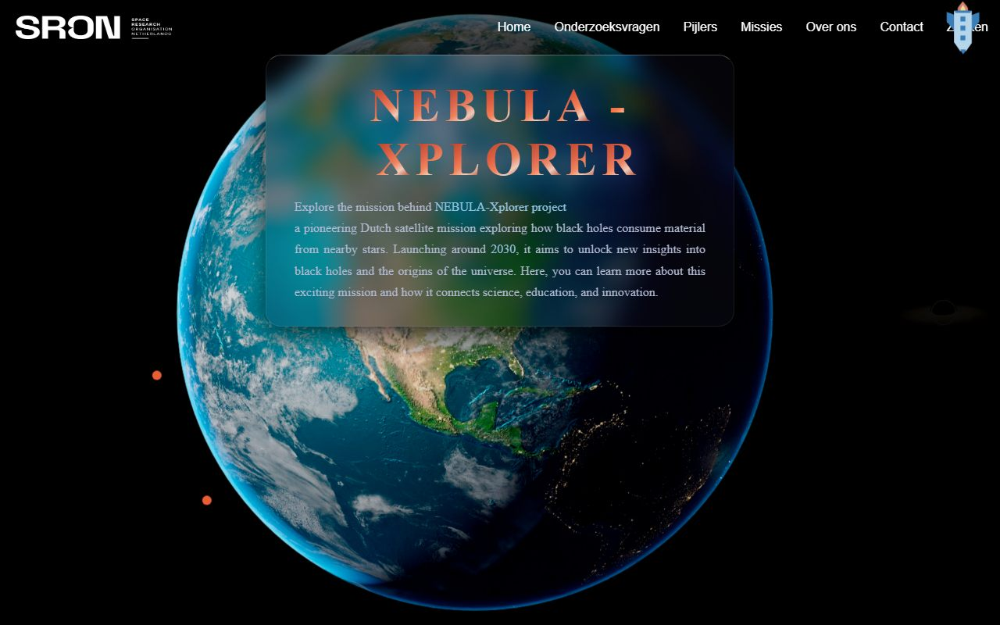

Hackathon

Wat je in de demo ziet gebeuren: What you see happening in the demo:
- De reis begint op aarde: een one-page site over de NEBULA-Xplorer, een fictieve satellietmissie voor SRON. The journey starts on Earth: a one-page site about the NEBULA-Xplorer, a fictional satellite mission for SRON.
- Scroll-storytelling: al scrollend reis je van de aarde de ruimte in. Scroll storytelling: as you scroll you travel from Earth into space.
- Eindbestemming: het 3D-zwarte gat, gebouwd met Three.js. Final destination: the 3D black hole, built with Three.js.
Over dit projectAbout this project
Tijdens de hackathon werkten we in een team aan een webapplicatie onder tijdsdruk. Het project leerde mij hoe belangrijk het is om goed te communiceren en taken duidelijk te verdelen. Zonder goede afstemming gaat een website snel kapot.
During the hackathon we worked in a team on a web application under time pressure. The project taught me how important it is to communicate well and divide tasks clearly. Without good alignment, a website breaks quickly.
Mijn rol en bijdragenMy role and contributions
Binnen het team werkte ik vooral aan de 3D-elementen. Ik ben begonnen met de astronauten die door de scène zouden bewegen, maar heb dat onderdeel later overgedragen aan een teamgenoot om me volledig te kunnen richten op het 3D-zwarte gat
Within the team I mainly worked on the 3D elements. I started out on the astronauts that would move through the scene, but later handed that part over to a teammate so I could focus fully on the 3D black hole
Gebruikte technologieënTechnologies Used
- HTML, CSS en JavaScript
- Three.js voor het 3D-zwarte gat
- Scroll-gedreven animaties
- Responsive canvas dat meeschaalt met elk schermformaat
- Git & GitHub voor de samenwerking in het team
- HTML, CSS and JavaScript
- Three.js for the 3D black hole
- Scroll-driven animations
- Responsive canvas that scales with every screen size
- Git & GitHub for team collaboration
Wat ik heb geleerdWhat I learned
Communicatie binnen een team is key. Je moet constant op de hoogte zijn van wat anderen doen en problemen direct bespreken, anders loopt het project vast.
Communication within a team is key. You have to stay constantly aware of what others are doing and address problems right away, otherwise the project gets stuck.